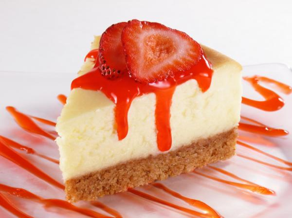

Receta de Cheesecake con fresas
inicio
Torta
Pie de limón
Pastel de zanahoria
Torta tres leches
Cheesecake con fresas
seccion 6
Receta de Cheesecake con fresas
Tiempo:
min
Ingredientes:
Pasos de la Preparacion:
© 2021. Todos los derechos reservados.
Maracaibo Venezuela